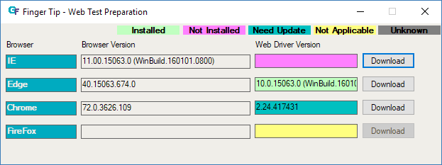

Finger Tip is helper tool that automatically download proper web driver for currently installed web browser.
Each web browser need compatible web driver for testing web-based software. GFriend support Internet Explorer, Edge, Chrome and Fire Fox for web testing. This tool help to install web driver for those browser.
This tool can access via GFriend UI (Tool - External Tool - Web Test Environment Setting)
You can check Web driver status by colored lable.
If proper version of web driver is avalable in the developer's site, this tool can download web driver by just clicking Download button.
You can use browsers which have proper web driver (Indicated as 'Installed') at your test such as Open With Edge.